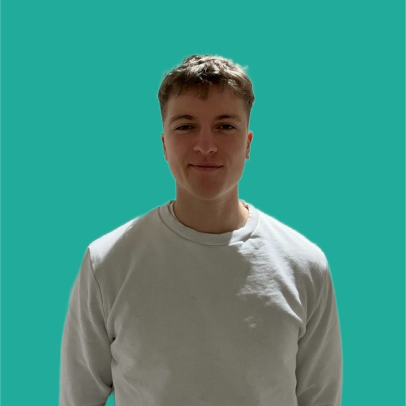

Disponible · Août 2026
L'Infrastructure IT
avec Rigueur
& Endurance.
Étudiant en BTS SIO SISR et alternant à la DGFIP. Je déploie des réseaux sécurisés et veille à la disponibilité des services critiques.

Oskar Doutreligne
Admin Système & Réseau
Cybersécurité
Réseau
SISR
Alternance DGFIP
En cours
BTS SIO SISR
2026
Localisation
Lille · Nord
Architecture Réseau
Conception et sécurisation d'infrastructure, segmentation VLAN, routage, administration pare-feux OPNSense.
Cybersécurité
Veille active sur les menaces. Application des bonnes pratiques ANSSI — mots de passe, habilitations, hygiène IT.
Qualités Personnelles
Coureur de fond, j'applique la même résilience dans mes projets : gestion de l'effort, concentration sur l'objectif final.
Environnements techniques
DGFIP — Alternance
- Assistance niveaux 1 et 2
- Gestion de parc (SIGMA/GLPI)
- Installation réseau LAN/ToIP
GSB — Projet École
- VLANs + OPNSense + DMZ
- Open vSwitch / Proxmox
- Active Directory / PowerShell
Prêt pour l'oral E5
Dossier complet : 2 contextes complémentaires, preuves techniques, veille technologique.